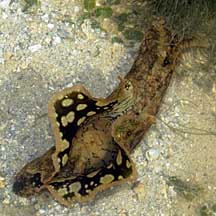
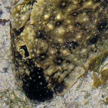
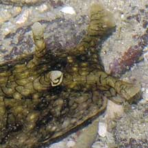
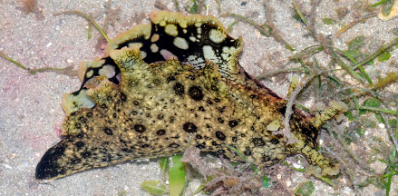
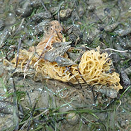
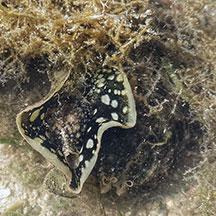

|
|
| sea hares text index | photo index |
| Phylum Mollusca > Class Gastropoda > sea slugs > Order Anaspidea |
| Black-tailed
sea hare Aplysia dactylomela Family Aplysiidae updated May 2020 Where seen? This large sea hare is sometimes seen near reefs on our Southern shores. Often, many individuals are seen at one time and not seen again for some time. Elsewhere, it is considered among the most commonly encountered sea hares in the Indo-Pacific. Features: 8-12cm. Body large, fleshy and smooth, said to be more leathery and firmer than other sea hares. Olive green or yellow. It is distinguished by a pattern of black smudged rings sometimes with white centres, and a network of fine black lines. It does have a black 'tail'! The inner side of the parapodia black with striking white blobs. There are two pairs of large tentacles. It is said that when disturbed, it releases purple ink. What do they eat? Like other sea hares, they graze on seaweeds. Some accounts say they prefer red seaweeds but will feed on others if their preferred food is not available. Other accounts say they feed on green seaweed. Some of seaweeds identified as their food include Udotea, Rhinocephalus, Caulerpa, Penicillus and Halimeda. |
 Lazarus Island, Jun 09 |
 A black 'tail'. |
 Large oral tentacles and rhinophores |
 Pulau Semakau South, Feb 16 Photo shared by Loh Kok Sheng on his blog. |
 Egg strings laid by the sea hare. Lazarus Island, Jan 19 |
 |

|
| Black-tailed sea hares on Singapore shores |
On wildsingapore
flickr
|
| Other sightings on Singapore shores |
 Two side-by-side Pulau Semakau South, Apr 25 Photo shared by Richard Kuah on facebook. |
Links
|